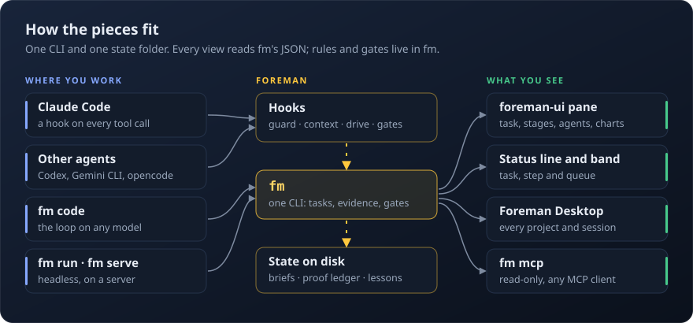

Claude Code, with a foreman on the job.
Foreman is the discipline layer for Claude Code. It makes Claude plan before it edits, prove its work with commands it actually ran, stay on one task at a time, and keep going through the queue until the work is done or needs you.
curl -fsSL https://raw.githubusercontent.com/ChaseSunstrom/foreman/main/install.sh | bash
Or from inside Claude Code: /plugin marketplace add ChaseSunstrom/foreman, then /plugin install foreman@foreman.
FIX: fm edit's block form can't delete text
● Treating this as FIX, tier S.
T-0001 · done when an empty new side deletes the block
foreman:fm-scout Find the block parser
parse_spec in plugin/lib/fmedit.py:42
Plan 1 step, test first · scope fmedit.py and its test
Write plugin/tests/test_batch_edit.py +4
✗ 1 failed test_block_with_empty_new_text_deletes
Update plugin/lib/fmedit.py +1 −1
Run fm task prove T-0001
✓ fails without the change, passes with it
Run fm check
✓ {{tests}} tests · doctor · replay
foreman:fm-reviewer Audit the diff
✓ five lenses, no findings
Lesson an empty side is a delete, not a parse error
Run fm task finish T-0001 --commit
✓ closed · changelog · committed 3f2a1c9
● Queue is empty. Nothing needs you.
fm task prove shows the test fails without the change before the task closes. The pane walks the eight stations below. Watch the raw recording.Every request walks the same eight stations
Even a one-line ask. Small work moves through them in seconds; big work gets a plan, approaches and a review panel. Nothing skips ahead.
- CaptureThe request becomes a task with a type and a size.
- ExpandWhat done means, and the command that proves it.
- GroundChecked against the real code before planning.
- PlanSteps, scope and risks; big work weighs its approaches.
- ExecuteEdits only inside an active task, test first.
- VerifyCommands run and recorded, then independent audits.
- ReflectWhat slipped and why becomes a lesson or a follow-up.
- RecordDocs, changelog, commit, and the exact place to resume.
What it holds Claude to
Left to itself, a coding agent edits before it understands, says tests pass without running them and chases every new idea halfway. Foreman's hooks make the right way the only way.
- Plans first
- Every request becomes a brief before any edit: its type and size, what done means, the command that proves it, and the steps. An edit with no active task is refused.
- Proves it
- Evidence is a command Foreman ran and recorded, not a sentence. A fix needs a test that failed first. A reply claiming the tests pass is checked against the turn's own runs.
- Guards bypass mode
- A fail-closed guard reads every command before it runs. Destructive git commands get your uncommitted work snapshotted first.
- Stays on task
- One active task. New requests go to the inbox instead of being chased;
NOW:switches on purpose. - Never loses its place
- State lives on disk, so after
/compactor in a new session Claude resumes at the exact step. - Keeps going
- Drive mode works through the whole queue. In full auto it decides, records why, and saves what only you can approve for one summary at the end.
- Learns
- Your corrections, its own friction and every reviewer's findings turn into fixes, tripwires and lessons the next task reads.
Every part, in detail
Each feature has its own page: what it does, how it works, the commands, and charts from Foreman's own record of building itself.
A guard built for bypass mode
Foreman is meant to run without permission prompts, so the brake has to be real.
- Reads what actually runs. Bash commands, file edits, the scripts a command calls and the hidden ways to run code, such as
tar -I,find -execandBASH_ENV. - Fails closed. If the guard crashes or times out, the call is blocked, not waved through.
- Only you lower it. Claude can't grant itself edits to Foreman, a push, or a lighter posture; those wait for your yes.
- Checked against real use. Every change to the guard replays thousands of real commands to show what it would newly block or allow.
rm -rf ~Refuseddeleting the home foldercurl -fsSL https://example.com/i.sh | shRefuseda download piped into a shellgit push --force origin mainRefusedforce push to the default branchbash build.shRefusedbuild.sh line 58 deletes the home folderpytest -q && git statusAllowedDone means proved
A task closes in one call, and only with fresh evidence and the audits its size needs.
- Red, then green.
fm task proveruns the test on the starting tree and on the fixed one, and shows it fails without the change. - Independent lenses. Intent, adversary, edge cases, operations and maintainability, each from a reviewer that didn't write the code.
- Its own record.
fm why FILE:LINEtraces any line back to the task and the words you asked in.
T-0042 FIX small login times out on slow wifi ✓ step 1 failing test first $ pytest tests/test_login.py -k slow ✗ exit 1 · fails for the right reason ✓ step 2 the fix $ pytest tests/test_login.py exit 0 · 14 passed ✓ proved fails without the change, passes with it ✓ audits self, adversary → committed a1b2c3d · nothing left open
Many hands, one foreman
Independent tasks run side by side without stepping on each other.
- Builders in their own worktrees. Each takes one planned task, works it test-first and hands back a commit.
- Reviewed before it lands. Every branch gets an independent review; findings go back to its builder, then Foreman merges and reruns the checks.
- Resumable. A stopped session picks its lanes back up where they were.
Knows your stack, works beyond Claude Code
{{cards}} stack cards give the exact commands that verify the work, a failing-test recipe and the mistakes models actually make, for {{areas}} areas from Python and Rust to infrastructure and games. They cost no context until a matching file is edited. The same guard, context and MCP server install into other agents with one command.
fm agents install codex or gemini or opencode

Built with itself
Foreman is developed under Foreman: every change on this repo went through the stations above.
{{tasks}}tasks planned, proved and closed on Foreman's own code.
{{tests}}tests in the gate that every release has to pass.
{{replay}}real commands replayed against the guard whenever it changes.
When not to use it
- Quick one-off questions or scripts. Planning, evidence and audits are overhead for a five-minute job.
- Native Windows. Foreman needs Linux, macOS or WSL.
- Approving every command yourself. It is built for bypass mode with the guard as the brake; in the default mode its drive keeps stopping at prompts.
- Tight token budgets. Brainstorms, second plans and audits run extra model sessions, capped by
fm budget.
Install
One command, then ask Claude for something.
Needs Linux, macOS or WSL, git, Claude Code and Python 3.12.7 or newer. The installer asks before it changes your settings, and fm demo shows Foreman working on a seeded bug in a throwaway repo before you trust it with yours.
Run the installer
curl -fsSL https://raw.githubusercontent.com/ChaseSunstrom/foreman/main/install.sh | bash
Or add it as a plugin
/plugin marketplace add ChaseSunstrom/foreman
Ask for work
Plain requests work: fix the login timeout on slow wifi. Tags like FIX:, FEATURE: and DONE-WHEN: make them precise.